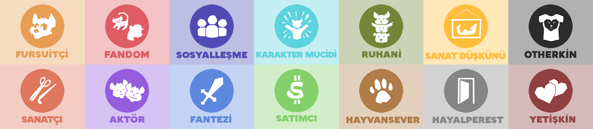
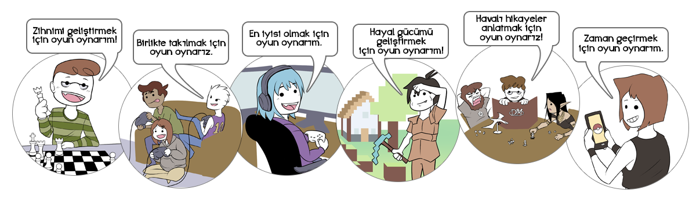
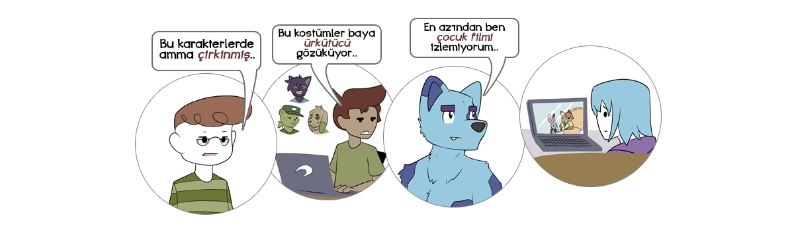
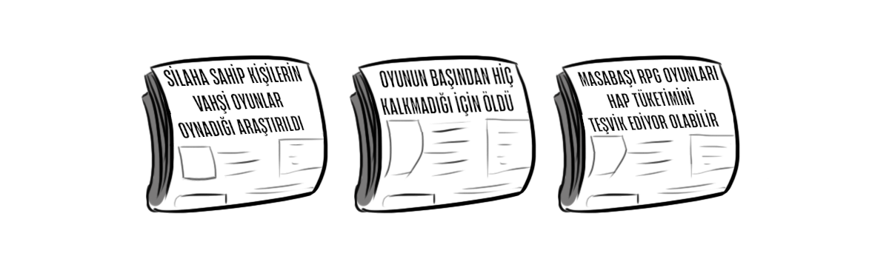
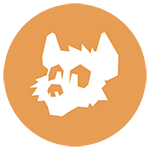
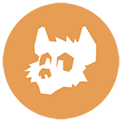
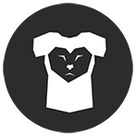
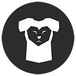

fur·ry
(isim)
anthropomorfik hayvan karakterlerden hoşlanan kimse.
Bu cevap aslında doğru olsada, alabileceğiniz en genelleyici, en sıkıcı yanıtlardan biri, ve pekde furryleri açıklamaya yardımcı olduğu söylenemez.

Tam olarak, furryler nedir ?
Daha iyi bir tanımlama yapmak zordur çünkü çok fazla kendilerini furry olarak tanımlayan vardır, hepside farklı ilgi alanlarına sahip, ve hepside nelerin furry olarak sayılacağı üzerine aynı karar almazlar.

Bir bakıma, "furry" sözcüğü "oyuncu" sözcüğüne çok benzerlik gösterir.
Kendilerini oyuncu olarak tanımlayan kişilerin çok fazla farklı sebepleri vardır:

Aynı şekilde kendilerini furry olarak tanımlayan kişilerin çok fazla sebepleri vardır:

Aslında, oyuncular gibi, furryler de kendi aralarında anlaşayamabilirler!


Furryler ve oyuncular arasındaki fark, ne kadar iyi anlaşıldıklarıdır. Herkes "oyuncu" sözcüğünün ne anlama geldiğini, ve tüm oyuncuların aynı olmadıklarını bilir.
Ama furryler, birçok insan için hala bir tür gizemdir.
Ve aynı daha oyunculuk gibi yeni yeni oluşmaya başladığında...

...çoğu haberler furrylerin kötü yanlarına odaklandılar:

Bu olaylar bile furryleri tam anlatmasada, kimse kötü birşey ile yargılanmayı sevmez.
Yinede, çoğu furry için, furry olmak büyük birşey değil, sadece ilgi alanlarından biridir!
Ama bazen, furryler, bazı tartışmaların konusu olabilirler, ve genellikle gariptir.

Eğer buraya göz atıyorsan, muhtemelen bazı bunun gibi tartışmaları duyduğunuzdan olabilir.
Ya da belkide kendinizi açıklamak için yol arayan bir furrysinizdir, veya daha önce hiç "furry" kelimesini duymadınız ve ne hakkında, ne olduğunu olduğunu öğrenmek için geldiniz.
Furryleri daha iyi tanımak için, dünya çapından Furry count furry ile birlikte bilgi topladık.
Bu bilgiler sayfamızın anketine göre gerçek zamanda güncellenmektedir.
Önemli Hatırlatma: Bu sayfada toplanan bilgiler sadece furry toplumunun küçük bir parçasını göstermektedir. Güçlü fikirlere ve furry topluluğunda daha fazla bilgisi olan kişilerin ankete katılması daha olasıdır. "Sıradan" kişilerin ankete katılma olasılığı daha azdır.
Bir açıdan bakmak gerekirse, FurAffinity adlı en büyük furry temalı websitesi 5.000 ila 30.000 arasında aktif kullanıcı barındırmakta. Furaffinity yöneticileri ve üyeleri, Furaffinity'de 1.6 Milyon kayıt olmuş kullanıcısının olduğunu belirttiler (2016).
Furry Türlerİ
Çoğu ilgi alanlarının furry topluluğunda tutarlılığı olmamasına rağmen, Furryler arasında bazı yaygın, ortak ilgi alanları bulunmakta. Örnek olarak:
- Ankete katılan furrylerin activity: fursona'ünün kendilerine ait bir karakter oluşturmakta.
- Ankete katılan furrylerin fantasy'u oyunlarda, filmlerde ve kitaplardaki furry karakterleri görmekten hoşlanır.
- Ankete katılan furrylerin activity: socialize'i furry fandomunu sosyalleşme ve arkadaş edinmek için kullanmakta.
- Ankete katılan furrylerin sadece Furry: talkative'u açık ve rahat olarak furry topluluğu hakkında konuşmayı uygun görür.
- Ankete katılan furrylerin sadece otherkin'i insan vücuduna hapsolmuş bir hayvan olduklarını düşünür.
- Ankete katılan furrylerin sadece activity: owned fursuit'ü fursuit sahibi.
Furryleri dahada derinden anlamak için, furry topluluğunda olan kişilerin belirli sebeplerine bakalım.
Bu kategorilere tüm kategoriler dahil değildir, ve çoğu furry muhemelen 1'den fazla kategori ile ilgilenmekte.
Anekte katılan furrylerin fantasy'u özellikle fantezi oyunları, filmleri ve kitaplarında bulunan anthropomorfik karakter ve tür düşkünü.
Anekte katılan furrylerin socializer'ü furry topluluğunu yeni arkadaş ve sosyalleşme yeri olarak kullanmakta.
Anekte katılan furrylerin animal lover'i hayvanları sevmekte, ve furrylerin yaptığı hayvan çizimlerini beğenmekte.
Anekte katılan furrylerin escapist'ü furry topluluğunu gerçek dünyadaki sıkıntılarından uzak durmak için kullanmakta.
Anekte katılan furrylerin connoisseur'ü kendilerini furry içerikli olmasa bile genel olarak sanat düşkünü olduklarını belirtti.
Anekte katılan furrylerin reinventor'i kendilerini daha iyi, yeniden tasarlanmış bir karakter olarak düşlüyor.
Ankete katılan furrylerin actor'i kendi furry karakterleri ile rol yapmayı, sohbetlerde veya yazarak yapmayı severler.
Ankete katılan furrylerin fandom'si bazı furry maskotları olan spesifik markaların hayranıdırlar.
Ankete katılan furrylerin fursuiter'i fursuitlere ilgi duymakta: furry karakterlerine benzeyen, anthropomorfik hayvan kostümleri.
Ankete katılan furrylerin artist'ü kendi çizdikleri, yazdıkları hatta yaptıkları eserleri ile furry topluluğunda bulunmayı seviyor.
Ankete katılan furrylerin dealer'i kendi çizdiği, yazdığı ya da yaptığı eserleri satarak kazanç sağlamakta.
Ankete katılan furrylerin spiritual'i hayvanlarla ruhani bir birliktelik hissettiklerini belirtti.
Ankete katılan furrylerin otherkin'i kendilerini therian ya da otherkin olarak tanımlarlar: kendilerinin insan vücuduna hapsolmuş bir hayvan olduğuna inananırlar.
Ankete katılan furrylerin adult'u furry fandomda cinsel aktivitelerde yeralmaktan hoşlandığını belirttiler. Genellikle bu tartışmaya açık bir konudur.
Tam olarak furryler ne yapar?
Bu genellikle furrylerin türüne göre değişiklik gösterir, ama konuşmaya değer bazı yaygın cevaplarda vardır.
Tabikide, tüm furrylerin yaptıkları burda listelenmedi.
Eğer bu sayfadan öğrenmek gereken birşey varsa, o da tüm furrylerin aynı olmadıklarıdır. Birisinin eğlenceli bulduğunu, bir diğeri sıkıcı ya da saçma bulabilir.
Anthropomorfik karakterlerin olduğu medyalardan hoşlanırlar
Ankete katılan furrylerin activity: mainstream media'u konuşan havyvan karaklerlerinin veya anthropomorfik fantezi türlerinin bulunduğu medyalardan hoşlandıklarını belirtti.
Çoğunlukla bu, kişilerin furry topluluğu ile ilgilenmesini sağlamakta.
Anthropomorfik karakterlere yer veren çok fazla film, televizyon dizileri, video oyunları ve kitaplar bulunmaktadır, ve bunlardan hoşlanmakta furrylerin en yaygın özelliklerinden biridir.
Tabii ki, bu şeyleri beğenmek içim furry olmaya gerek yoktur!
Sonuçta, Star Trek sevmeniz için kendinize "trekkie" demeniz gerek yoktur. Bu sadece ne kadar Star Trek sevdiğinizi gösterir.
Furryler ilk başta genellikle büyük animasyon, film(Lion King, Zootopia, My Little Pony, vb.), hayvan karakterli video oyunları(Starfox, Sly Cooper, Sonic, vb.), ya da anthropomorfik tür ve karakter içerenfantezi serileri(Dungeons & Dragons, Redwall, Chronicles of Narnia, vb.) hayranı olan kişiler olarak başlarlar.
Diğer furryler tarafından yapılan resimlere göz atarlar
Ankete katılan furrylerin activity: furry media'i FurAffinity gibi siteleri furry çizimlerine, yazılarına vs. bakmak için kullandıklarını belirttiler.
Nihayetinde, çoğu furryler yalnız olmadıklarını; anthropomorfik karakterleri onlar kadar seven bir topluluk olduğunu, farklı geçmişleri olsa bile aynı ortak birşeyleri paylaşırlar.
Birisi furry topluluğunu keşfettiğinde, ilk yaptıkları şey genellikle furry çizimlerine, yazılarına, animasyonlarına ve birçok şeylere göz atmaya başlarlar.
Furrylerin uzaktanda olsa buluşmalarını, aynı ortak ilgi alanlarını paylaşmalarını, yaptığı çizimleri,hikayeleri paylaşmalarına yardımcı olacak siteler kurulmuştur. En büyüklerinden birkaç örnek olarak:
- FurAffinity; en büyük furry temalı websitesi, ana olarak sanat ve hikaye paylaşımına odaklanmıştır. Furaffinity'de bazı yetişkin içeriklerine izin vermekte ama sadece yetişkin hesaplar erişebilmektedir .
- /r/furry/; Reddit'in bir parçası olan "/r/Furry" topluluğu, herhangi bir konu uzerine forum açabilecekleri devasa bir websitesidir. "/r/Furry" topluluğunda yetişkin içerikler izin verilmemekte ama sanatsal çıplaklığa izin verilmektedir.
- DeviantArt; Ana olarak sanatsal paylaşımlar yapılan bu websitesi furryler için özellikle oluşturulmamıştır, ama büyük bir kısmını furry çizimleri oluşturmaktadır, yinede çoğu furry çizeri DevianArt'ı Furaffinity'e sıkı yetişkin içerik politikası nedeniyle daha çok tercih etmektedir.
Diğer furrylerle sosyalleşirler
Ankete katılan furrylerin activity: socialize'i furry topluluğunu yeni arkadaş ve sosyaleşme amacıyla kullanmaktadır.
Furryler, genel bir kural olarak, arkadaş canlısıdır. Her topluluktada görülebileceği üzere, furry topluluğun tuhaflığı olabilmekte, ama çoğu furry nihayetinde yeni arkadaşlar bulmaya ve birlikte zaman geçirmeye başlarlar. Sosyalleşmeler çoğunlukla sohbet odalarında, internetten oyun oynayarak ya da sesli olarak sohbet ederek gerçekleşir
Bazen, furryler kendi favori furry karakterleri, çizimleri veya filmleri üzerine konuşurlar. Ama çoğunlukla furryler kimseden bir farkı olmadan sıradan gündelik konuları konuşurlar. Oyunlar, dünya/ülke gündemi, başlarına gelen acı/tatlı olayları anlatırlar. Unutulmamalıdır ki,furrylerin genellikle hakkında düşünülen bir konu olarak, kimse aynı bir konu üzerine herzaman konuşmaz. Bir zamandan sonra sürekli konuşulan konu bozmaya, sıkılmaya, artık ilgi çekici bir halden çıkmaya başlar.
Kendileri için furry karakterleri oluştururlar
Ankete katılan furrylerin activity: fursona'ü kendilerine ait bir furry karakter oluşturduklarını belirtti.
Birisi furry topluluğu ile ilgilenmeye başlayınca, bir zamandan sonra kendilerine furry karakter oluştururlar. Bu karaklerler,çoğunlukla "fursona" denir, farklı kişilere farklı şeyler ifade eder.
Çoğu furryler için, kendi karakterlerini benimserler. Tam olarak kendilerini anımsatmasada, diğer furrylerle takılırkenki kişilikleri havalı duran bir karaktere dönüşür.
Diğer furryler için ise, kendi karakterleri sadece o kadardır, kitapta ya da filmde bulabileceğiniz bir karakter gibi. Kendilerini temsil etmesede, diğer furrlerle rol yaparken kullanırlar. Çoğu kişilere göre birden fazla, her birinin farklı kişilik ve dış görünüşlerinin olduğu karakterlere sahip olmak yaygındır.
Kendi karakterleri olarak rol yapma oyunu oynarlar
Ankete katılan furrylerin activity: roleplay'sı kendi karakterleri olarak rol yapma oyunlarına katıldıklarını belirtti. Bu aktivite, furrylerin bir kısmı için furryliğin ana unsurunu oluştururken, diğerleri için utanç verici, sıkıcı veya sinir bozucu bulurlar.
Bazı furry gruplarında, kendi karakterleri olarak uzun süreliğine sohbet etmek yaygındır. Bu furrylere göre, her etkileşim ve konuşmalar kendi karakterlerinin davranışları ve kişiliklerini keşfetmek için bir fırsattır. Bu genellikle kendi karakterlerini diğer yakındaki karakterlerle etkileşimde bulunmak isteyen "aktör" furrylerin arasında yaygındır.
Diğer bazı gruplarda ise, rol yapmak utanç verici olarak gözükmektedir ve, rol yapan furryleri furry toplumuna zarar verdiğini düşünmektedirler. Bu furryler, rol yapan furrylerin iki sebepten zarar gördüğünü düşünürler: gerçek karakter tasarımından yoksun olduğundan genellikle çocuksudur,ve genellikle rol yapma flörtleşmeye dönüşür.
Hatta rol yapmayan furrler bile, bazı kişilerin karakteri hakkında alay etmesi olağandışı değildir. Furry topluluğunda çok fazla klişeler vardır, ve bazı klişeler ise furrylerin tartışmalarına konu olur. Örnek olarak, tilki karakteri olan furryler genellikle gelişigüzel görülür, ve furryler ilişki meselelerini konuşurken, muhtemelen ilk ilişkisi "tilki ile sevgili" olarak başladığından alay edebilir.
Çizim yapar, yazı yazar veya hayal güçlerini geliştirirler
Ankete katılan furrlerin activity: art'i furry çizimi yaptıklarını, furry temalı hikayeler yazdıklarını belirttiler.
Sadece fantezilerde furry karakterleri bulunduğundan, çoğu furry kendi karakterlerinin çizimi ve hikayelerine baya emek sarf ederler. Tüm furrylerde sanat yeteneği bulunmaz, ama topluluk çizimler üzerine odaklandığından, furryler hayal gücünü geliştirmeye cesaretlidir.
Hatta normalde çizim yapmayan furryler bile bazen kendi karakterlerini tasarlamak için kendilerini çizimlerde denerler. Furry topluluğu çokça arkadaş canlsı olduğundan, çizimlerin çoğu genellikle olumlu eleştiriler alır, ve bu iyi eleştiriler sayesinde de çizerler daha çok çizim yapmaya cesaretlendirir.
Topluluğa yeni giren hiçbir çizerlik yanı olmayan furryler bile, hayatlarının başka yerlerinde kullanabilecekleri bir nebze yetenek ve güven geliştirirler.
Kendi karakterleri için özel komisyon alırlar
Ankete katılarn furrylerin activity: commission'i kendi karakterleri için çizim, hikaye ve diğer çeşitli şeyler aldılar.
Bir furrynin çizerlik yanı olsun olmasın, etrafındaki başka çizerlerin çizim yeteneklerinden etkilenirler. Nihayetinde, çoğu furry başka çizerlerden kendi karakterleri için çizim ya da hikaye yapmaları için komisyon alır.
Çoğu furry için, başka bir furry tarafından kendi karakterlerinin tanınması onlar için heyecan vericidir. Bu daha çok, kendi karakterinin popülerliğini yeni arkadaş edinmek için kullananlar, aktör ve karakter muciti, hatta sosyalleşmek isteyen furryler için daha doğrudur.
Diğer furryler, özellikle de fandomdaki ve fanteziye ilgi duyan furryler, kendi karakterlerini başka çeşitli medyalardan ünlü karakterle birlikte çizdirmek için komisyon alırlar. Bu furryler için, çizimler popülerlik için değil daha çok hikaye anlatımı için önemlidir.
Çoğu eğlence ve lüks endüstrileri gibi, furry çizim endüstrisinin de küçük bir kısımı, orantısız ve büyük oranda paralar harcarlar. Bu furryler çok fazla satın aldıkları kaliteli çizimlerden dolayı kolayca popüler olurler, ve karakterleri bir çeşit "ünlü furry" haline gelir. (bazen ise "popufur" olarak adlandırılırlar).
Diğer furrylerle buluşurlar
Ankete katılan furrylerlin activity: local meetup'i küçük furry buluşmalarına katıldığıını belirtti.
Ufak buluşmalar düzenleyerek küçük furry grupları birlikte grup aktiviteleri yapar. Bu grup aktiviteleri çoğunlukla hayır kurumu için para toplamak, kamp yapmak, oyun oynamak, film izlemek ya da hafta snu partilerini içerir. Buluşmalara katılım farklılık gösterebiliyor. Bazı buluşmalara birkaç kişi gelirken bazı buluşmalara ise yüzlerce furry katılmakta.
Bazen, furryler aktivite yaparken fursuit giyebilirler (eğer fursuitleri varsa, ki sadece furrylerin activity: owned fursuit'ü bir fursuite sahip.) Başka zamanlarda, özelliklede halka açık, sadece furrylere ait olmayan buluşmalarda furrylerin fursuitlerini çıkarmaları istenir.
Buluşmalar genellikle ordaki furry topluluğu, ya da orada aktif olarak yaşayan sosyal çevresi geniş olan furryler tarafından bireysel olarak düzenlenir.
Furry fuarlarına katılırlar
Ankete katılan furrylerin activity: convention'ü furry fuarlarına katıldığını belirtti.
Furry fuarlarıtüm ülkedeki, hatta dünyadaki furrylerin birkaç günlüğüne sosyalleşmeleri, furry sanat eserlerini alıp satmaları, fursuit giymeleri, ve en önemli olarak furry topluluğunda arkadaş edindikleri kişileri görme fırsatı için bir arada toplanmasını sağlar.
Furry fuarları sadece internetten furry arkadaşları ile sohbet eden kişilerin birkaç günlüğüne furry fuarına gelmesi sosyalleşmeyi seven furryler için önemlidir, ve zamanının çoğunu fursuit giyerek, fursuitle aktiviteler (fursuit oyunları, fursuit yetenek/dans yarışmaları) yaparak geçiren fursuitçiler için de önemlidir.
Furry toplumunun özelliklede yetişkin kısmında aktif olanlar, ya da furry topluluğunda uzak ilişkiye sahip olan furryler için furry fuarları fiziksel olarak buluşmalarını sağlar. Bu fırsatlar nadiren gerçekleştiğinden, çoğu furry (con reason: sex) cinsel aktiviteleri furry fuarına katılma sebeplerinden biri olarak belirtmekte, çoğu kişinin furry fuarlarının cinsel birşey olduğunu düşünmesine yol açmaktadır.
Aslında, ankete katılan furrylerin sadece con main reason: sex'i sadece furry fuarına cinsel aktiviteler için gittiğini belirtti, ve sadece ankete katılan furrylerin con main reason: casual sex'ü cinsel ilişkiye girmek için furry fuarına gittiğini söyledi.
Furrylerin, furry fuarına katılma sebeplerinin bazıları:
- con reason: meet existing friends: Arkadaşlarıyla buluşmak,
- con reason: make new friends: Yeni arkadaş edinmek,
- con reason: watch fursuits: Fursuitçileri izlemek,
- con reason: room parties: Küçük oda partilerine katılmak,
- con reason: buy: Furry çizim ve sanat çalışmalarından satın almak.
...gibi aktiviteleri içermektedir.
Fursuit
Fursuitler, insanların aklına furry diyince ilk gelen fikirlerden birisidir. Ama, aslında ankete katılan furrylerin sadece activity: worn fursuit'i fursuit giymiş, ve sadece activity: owned fursuit'ü bir fursuite sahip.
Fursuitçi topluluğu furry topluluğu kadar çeşitlidir, ve bir fursuite sahip olmak için birçok sebep vardır:
Kendilerini daha rahat ifade edebilmek için
fursuit score: comfort
Diğer furryler ve fursuitçiler ile sosyalleşmek için
fursuit score: socialize
Dünya sıkıntılarından uzaklaşıp eğlenmek için
fursuit score: escape
Şirin ve komik davranarak insanları mutlu etmek için
fursuit score: perform
Daha çok kendi karakteri gibi davranabilmek için
fursuit score: character
Genelde kostüm ve maske giymeyi sevdikleri için
fursuit score: costume
İnsanlara sarılarak kendilerini iyi hissetmelerini sağlamak için
fursuit score: hugs
Yetişkin sebepler için
fursuit score: adult
Bazı markalara değer verdiğini göstermek için
fursuit score: franchise
Çizimler, hikayeler, oyunlar, veya başka eşyalar satmak
Ankete katılan furrylerin activity: paid'i furry sanat eserleri, hikayeleri, ve diğer şeyleri satarak kazanç elde ettiğini belirtti.
Diğer topluluklarda da olduğu gibi, çizerler, yazarlar animatörler, ve diğer girişimcilerin furry topluluğu üzerinden kazanç etme yol vardır. Bazı kazanç sağlayan furryler diğer furryler için bir hizmet sağlamakta, diğer yetenekli kişiler ise başka yollardan kazanç sağlama peşinde.
Furry topluluğunda yaygın olan bazı kazanç sağlama yolları ise:
- Özel çizim/hikaye komisyonları: Furryler çoğunlukla çizerlere ve yazarlara özel çizim/hikayeler yapmaları için para öderler. İleriki zamanlarda, çoğu çizer bu modeli, aşşağıdada belirtildiği gibi "Your Character Here (Senin Karakterin Buraya)" (YCHS) modeli ile değiştirmiştir.
- "Your Character Here (Senin Karakterin Buraya)" (YCH) satın alımları: Sil baştan bir çizim yapmak yerine, bazı çizerler önce bir manzara/resim çizip, belirli yerlerini insanların kendi karakterleri ile çizilebileceği kısımlar ayarlarlar. Bazı furryler çizimdeki oynama özgürlüğünden şikayet etse de, bazıları ise çizerlerin çizimlerinde daha büyük söz sahibi olduğunu savunurlar
- Sürekli ödemeli içerikler: Çizerler büyük bir takipçiye ulaştıklarında, bazı içeriklerini sürekli ödemeli olarak yayımlayabilirler. İçeriği görmek isteyenler ise ayda bir ödemeli sisteme sahip (çoğunlukla Patreon gibi) yerlere bir miktar para ödemeleri gerekmektedir. Bu sistem daha çok yetişkin içerikli çizerler arasında yaygındır. Genellikle belirli bir parayı kişiler daha yüksek kalitede, ya da sansürsüz bir şekilde görmek için ödeme yaparlar.
- Bağışlar: Bazı çizerler içeriklerinin bazılarını sürekli ödemeli sistem ile herkesden gizlememeyi, onun yerine kitlesinin cömertliğine dayanır. Özelliklede Patreon gibi sitelerin popülerleşmesi ile birlikte, bu sistem üzerinde önemli rol oynamakta, ve etkili olarak çizerlerin istedikleri eserleri yapmalarını sağlamakta.
Yetişkin şeyler
Ankete katılan furrylerin activity: viewed adult content'si yetişkin furry içeriklerine baktığını belirtti.
Cinsey şeyler çok anlaşmazlık çıkaran konulardan biridir. Bazı furryler (statsex: yes) furry fandomunu ana olarak cinsel şeyler üzerine olduğunu düşünürken, diğerleri ise (statsex: no) furry topluluğunda yerinin olmadığını söylüyor.
Büyük çoğunluk ise (statsex: can be), furry topluluğunun tamamen cinsellik üzerine olmadığını, ama içerebileceğini de belirtti.
Elbette, topluluğun çoğunluğu (activity: viewed adult content) kendi isteği ile yetişkin furry içeriğine baktığını belirtti. Genel olarak insanların ne kadar pornografik içeriklere baktığını bilmek zordur, ama çoğu furryin yetişkin furry içeriklerini, furry olmayan kişilerin diğer pornografik içeriklere bakmayı sevdiği kadar sevdiklerini söyleyebiliriz.
Furry topluluğunda büyük bir konu olduğundan, kendi kategorisine ayırdık.
Cİnsel Bİr şey mİ?
Hayır.
Ankete katılan furrylerin statsex: no'ine göre
Hayır, ama olabilir de.
Ankete katılan furrylerin statsex: can be'sine göre
Evet.
Ankete katılan furrylerin statsex: yes'üne göre
Cinsellik furryler arasında genellikle anlaşmazlıların çok yaşandığı konulardan biridir. Genel olarak konuşmak gerekirse, furry topluğu cinsel şeylerle ilgisi çoğu furry onaylamasa bile biraz daha fazladır, ama furry olmayan diğer kişilerin düşündüğünden dahada azdır.
Çoğu kişi cinsel ilişkilerden zevk alır. Ve insanların hayal dünyası geniş ve farklı şeyler denemeyi sevdiklerinden, cinsel ilişkilerini kendi hobileri ile birlikte deneyeceklerdir.
Eğer furry olmayan insanların arasında olsaydınız, ve sizinle tamamen dürüst olsaydılar, muhtemelen böyle şeyler duyabiliyor olablilirdiniz:

Furrylerde buna benzer bir şekildedir. Furry topluluğu tamamen cinsellik ile alakalı değildir, ama bazen içine de girebilir.
Ama bundan biraz daha fazlası da var.
Furry topluluğunun, furryleri genel popülasyondan biraz daha cinsel odaklı yapmak için bir araya gelen birkaç özelliği vardır:
-
Furryler ana akımlardan biri değildir, bu yüzden furry topluluğu meraklı diğer kişilerin ilgisini çeker.
Furry topluluğu hala bir çeşit "gizli" bir kültürdür, ve bu yüzden de, çoğu furry diğer insanlardan farklı, maceracı ve meraklı kişiler olduğundan furrydirler.
Genellikle, furry fandomunda olmayı deneyecek kadar meraklı olan kişiler, cinsel konularda da meraklıdır.
-
Furryler çoğu zaman hassas konular hakkında açık fikirlidir.
Furry topluluğu, çok açık fikirli ve dürüst olan kişileri eleştirmekte bayağı yavaştır. Furry topluluğunda bulunan tüm kişilerin ortak sebebi herkesin farklı garip şeyleri benimsemiş olmasıdır, ve birilerinin cinsel bir konu hakkında konuşmaya başlamasında da açık fikirlilik ve kabul görüşlülük devam eder.
-
İnsanların hayal gücü genellikle cinsel şeylerlerle sonuçlanabilir, ve çoğunlukla furrylerin de hayal güçleri geniştir.
Bir mağra adamına kütük ve bıçak verin, kütüğe bir kadın kazıyacaktır. Yunan bir çizere boya verin, kağıda Aphrodite'yi çizecektir. Bir hintliye heykeltıraş için aletleri verin, Khajuraho'daki Anıtlar Grubunu inşa etsin.
Furry topluluğu hayal gücü çok geniş olan topluluklar arasındadır - çok fazla çizer, yazar ve animatöre sahiptir. Çizer olmayan furryler bile toplluğun bir parçasıdır çünkü çizerlerin yaptığı eserleri beğenirler. Resim, kitap, film, TV dizileri ya da video oyunları gibi.
Hayal gücü geniş olan zihinler, insanlığın macera, drama, komedi, ve cinsel şeyler gibi her açısını -genellikle pornografik çizimler ile- keşfetmeye meraklıdır.
-
Ergen erkekler, furry demografisinin büyük bir bölümünü oluşturur.
Çoğu furry cinsel şeylerin konuşulmasının yasak olduğu yerlerden gelir, ve tamda kendi cinsel yönlerini keşfederken furry topluluğuna rastlarlar.
Cinsel şeylerle ilgili fikirlerinin konuşulmasına izin verildiğini öğrendiklerinde, bu konulara ilgileri çok fazla artış gösterir.
Tüm bu etkenleri topladığınızda, cinsel şeyler ile ilgili olmayan, ama cinsel konulara bayağı pozitif yaklaşan bir topluluk elde ediyorsunuz.
Çoğu furry cinsel şeyleri sağlıklı, eğlenceli ve doğan birşey olarak gördüğünden pek de çizmekte, bakmakta ve hakkında açıkça konuşmakta sorun görmüyor.
Furry topluluğunda cinsel şeyler hakkında çok fazla yanlış bilinen tanımlar vardır.
İnsanlar furrylerin cinsel olarak ne yaptığını tahmin etmeye çalıştığında akıllarına: tuhaf fursuit partileri, tasma ve kayış, ve zoofililik akılla gelir.
Ama gerçekte, sadece furrylerin like: murrsuits'sı fursuit içinde cinsel ilişkiye sevdiğini, sadece like: puppy play'u hayvan gibi davranmayı sevdiğini, ve yine sadece furrylerin like: zoo'sı hayvanların herhangi bir yönünden cinsel olarak ilgi çekici bulduğunu belirtti.
Mesele şu ki çoğu furry, pornografik çizimleri (like: art), veya kitaplarda (like: literature) yer verilen anthropomorfik karakterlerden hoşlanıyor.
Bazen, bu karakterer popüler çizgi film karakterlerine ya da TV dizilerindekilere benzer. Diğer zamanlarda ise, karakterler video oynları veya fantazi oyunlarından gösterilir. Çoğunlukla, furry pornografisinde gözüken karakterler ise furryler tarafından oluşturulmuş kendilerine özgü karakterlerdir.
Tamamen furry topluluğunu düşünürsek, insanlar furry pornografisini çok fazla farklı sebeplerden dolayı severler:
Genellikle gelişen, pozitif yönlü cinsel felsefeye sahip olduğundan
adult content: sex positive
İnsanlardan daha egzotik ve ilgi çekici karakterlere yer verdiğinden
adult content: exotic
Ticaret amaçlı pornodan daha etkileyici, gerçekçi hissettirdiğinden
adult content: expressive
Gerçek hayatta yapmanın imkansız ya da tehlikeli olabilecek fetişleri keşfetmelerine yardımcı olduğundan
adult content: impossibility
Furry olmayan şeylerle aynı zemini paylaştığından: hayvan gibi davranma ya da zoofili içerdiğinden
adult content: fursuits
Furry pornografisine bakmayı seven furryler, furry porn: enjoy or okay furry pornografisine bakma ihtiyacı olmadıklarını söylediler, sadece normal pornografiye ek olarak sevdikleri başka birşey olduğunu belirttiler.
Pornografik çizimler dışında, yetişkin furrylerin sevdikleri başka şeyler:
ㅤ ㅤㅤ ㅤ ㅤErotik Rol
ㅤ ㅤ ㅤㅤㅤㅤㅤㅤYapmak
like: erp Ankete katılan furrylerin
Cinsel Furry Oyuncakları
like: sex toys of surveyed furries
Fursuit ile Cinsel Aktiviteler
like: murrsuits of surveyed furries
Pek çok insan, kim olduklarını tanımlamasına izin vermeden cinsel aktivitelerden zevk alır. Aynı şekilde cinsel şeyler, furry topluluğunun tanımlayıcı bir özelliği değildir: bu sadece birçok furrynin arka planda keyif aldığı bir şeydir.


 


 
